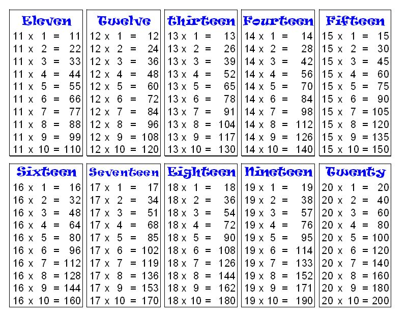
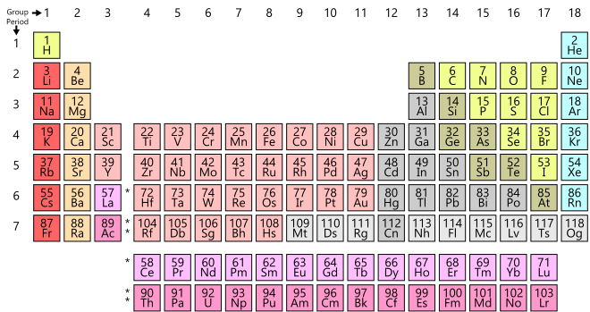
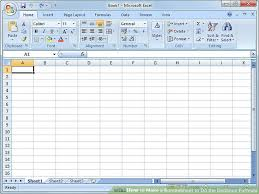

| Name | Surname | Favourite Sauce | Hometown |
|---|---|---|---|
| Gcobisa | Nkonzo | Sweet Chilli | Gugulethu |
| Warnita | Adams | Mushroom | Ravensmead |
| Evan | Christians | Tomato | Lotus River |
| Natheer | Kamish | BBQ | Hanover Park |
| Zainab | Alexander | Salad dressing | Belhar |
| Taariq | Bardien | Spur sauce | Grassy Park |
| Josh | Arendse | Tobasco | Athlone |
| Sheldon | Orgill | Chilli | Manenberg |
| Reagan | Beck | Chilli | Manenberg |
| Marlon | Demas | Perinaise | North Pine |
| Miguel | Kroukamp | Perinaise | Kuilsriver |
| Tyrone | Joubert | BBQ | Hanover Park |
| Litha | Nelani | Nandos | Khayelitsha |
| Kaylem-Lee | Andrews | Nandos Hot | Mitchell's Plain |
| John-Paul | Lewis | Sweet Chilli | Lotus River |
| Daniel | Hawes | Peri Peri | Mitchell's Plain |
| Asthon | English | Peri Peri | Mitchell's Plain |
| Shakeel | Isaacs | Chilli | Mitchell's Plain |
| Shanton | Waldien | Nandos extra hot | Mitchell's Plain |
| Michael | Ian De Necker | Special 21 reserve | Cape Town |
| Jesse | Dilgee | Nandos Hot | Cape Town |
| Gedeon | Nzemba | Cheese | Paarl |
| Urick | Esau | Chilli | Athlone |
A table is an arrangement of data in rows and columns, or possibly in a more complex structure. Tables are widely used in communication, research, and data analysis. Tables appear in print media, handwritten notes, computer software, architectural ornamentation, traffic signs, and many other places. The precise conventions and terminology for describing tables vary depending on the context. Further, tables differ significantly in variety, structure, flexibility, notation, representation and use.
When publishing an article or any sort of document, there needs to be a table of content.A table of contents, usually headed simply Contents and abbreviated informally as TOC, is a list, usually found on a page before the start of a written work, of its chapter or section titles or brief descriptions with their commencing page numbers.
Mathematical tables are lists of numbers showing the results of calculation with varying arguments. Before calculators were cheap and plentiful, people would use such tables to simplify and drastically speed up computation. Tables of logarithms and trigonometric functions were common in math and science textbooks. Specialized tables were published for applications such as astronomy, celestial navigation and statistics.

The periodic table is a tabular arrangement of the chemical elements, ordered by their atomic number, electron configuration, and recurring chemical properties, whose structure shows periodic trends.
Database systems often store data in structures called tables; in which columns are data fields and rows represent data records.
Modern software applications give users the ability to generate, format, and edit tables and tabular data for a wide variety of uses.
